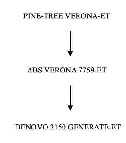
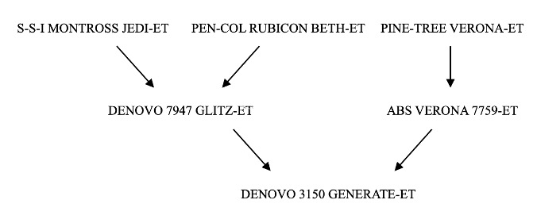
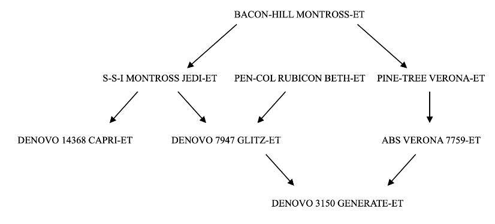

Capítulo 9 Parentesco y Semejanza entre Parientes
Ejercicio 9.1
Un excelente ejemplo, involucrando tanto parentesco directo como parentesco colateral, es el que figura en el Manual de Prácticas del curso de Zootecnia (Echeverrı́a et al. (2012)), página 31 y cuyo diagrama de flechas reproducimos en la figura 9.1. La idea es calcular el parentesco aditivo entre los individuos E y G, que son entre ellos padre e hijo respectivamente. De lo que vimos más arriba sabemos que normalmente un padre transmite a su hijo la mitad de su información genética, por lo que en ausencia de otra información (consanguinidad o relación con el otro progenitor) el parentesco entre padre e hijo será de \(\frac{1}{2}\).
Figure 9.1: Diagrama de flechas con un cruzamiento recurrente entre hermanos. El objetivo es calcular \(a_{EG}\). La flecha roja indica una relación de parentesco directo entre los dos individuos a los que les queremos calcular el parentesco aditivo (E y G), mientras que el círculo rojo indica el ancestro de esa relación. Los círculos amarillos indican ancestros comunes a ambos candidatos.
Ejercicio 9.2
Verificar que el resultado del parentesco entre D y F obtenido de la matriz de parentesco es idéntico al correspondientes del diagrama de flechas del Ejercicio 9.1.
Ejercicio 9.3
Para nuestras amigables ovejas verdes la varianza aditiva del color (verde) fue de \(3,2 \text{ unidades}^2\), la varianza de dominancia de \(0,4 \text{ unidades}^2\) y la varianza del ambiente común de \(1,2 \text{ unidades}^2\).
Determinar la covarianza esperada para medios hermanos y para hermanos enteros.
Ejercicio 9.4
En un estudio realizado para obtener estimados de componentes genéticos de la varianza de diámetro de fibras en ovejas verdes se realizaron mediciones bajo dos diseños experimentales: 1) un diseño de medios hermanos y 2) un diseño de hermanos enteros. En el primer diseño se obtuvo un estimado de la covarianza fenotípica de \(\mathrm{Cov_{P_{MH}}}=0,45\ \mu\text{m}^2\), mientras que en el segundo se obtuvo un estimado de la covarianza fenotípica de \(\mathrm{Cov_{P_{HE}}}=1,25\ \mu\text{m}^2\). En los dos diseños los hermanos fueron separados de sus madres al nacer y alimentados y criados todos juntos (por lo tanto no compartieron un ambiente especial a las parejas de hermanos).
Obtener un estimado de la varianza aditiva, así como un estimado de la varianza de dominancia a partir de los datos anteriores.
Ejercicio 9.5
En la población de ovejas verdes que han estado presentes en varias partes del libro se realizó un experimento para estimar la varianza aditiva del peso del vellón verde limpio (PVVL). Teniendo en cuenta las condiciones de la población se trabajó con un diseño de medios hermanos balanceado, donde los segundos vellones de 4 medios hermanos por carnero (con 4 carneros) fueron medidos. Los resultados de la medición se encuentran en la tabla siguiente.
| padre | MH | Peso vellón limpio (kg) |
|---|---|---|
| p1 | mh1.1 | \(3,5\) |
| p1 | mh1.2 | \(3,4\) |
| p1 | mh1.3 | \(3,9\) |
| p1 | mh1.4 | \(3,7\) |
| p2 | mh2.1 | \(4,0\) |
| p2 | mh2.2 | \(4,1\) |
| p2 | mh2.3 | \(4,4\) |
| p2 | mh2.4 | \(3,7\) |
| p3 | mh3.1 | \(2,9\) |
| p3 | mh3.2 | \(2,8\) |
| p3 | mh3.3 | \(4,1\) |
| p3 | mh3.4 | \(3,5\) |
| p4 | mh4.1 | \(4,3\) |
| p4 | mh4.2 | \(3,6\) |
| p4 | mh4.3 | \(3,1\) |
| p4 | mh4.4 | \(3,4\) |
Estimar la varianza aditiva de peso de vellón verde limpio a partir de los datos.
Ejercicio 9.6
Cuatro individuos fueron secuenciados para los 8 marcadores siguientes:
| Marcador | Alelo 1 | Alelo 2 |
|---|---|---|
| snp1 | C | G |
| snp2 | A | C |
| snp3 | C | T |
| snp4 | G | T |
| snp5 | A | G |
| snp6 | A | T |
| snp7 | C | T |
| snp8 | A | C |
La tabla de genotipado, con la información relevante para el cálculo de la similaridad genómica para los 4 individuos (en formato tped, excluyendo los datos de posicionamiento de cada marcador) fue la siguiente:
| Marcador | ||||||||
|---|---|---|---|---|---|---|---|---|
| snp1 | G | G | G | G | G | G | G | G |
| snp2 | C | C | C | C | C | C | C | C |
| snp3 | C | T | C | T | T | T | T | T |
| snp4 | G | T | G | G | G | T | G | T |
| snp5 | A | A | A | G | A | G | A | G |
| snp6 | T | T | A | A | A | A | A | T |
| snp7 | T | T | T | T | T | T | C | T |
| snp8 | A | C | A | C | C | C | A | C |
Por otra parte, las frecuencias de base de los alelos de referencia (el segundo por orden alfabético) para cada SNP es la siguiente: \(\mathrm{snp1}=0,45\); \(\mathrm{snp2}=0,47\); \(\mathrm{snp3}=0,47\); \(\mathrm{snp4}=0,5\); \(\mathrm{snp5}=0,5\); \(\mathrm{snp6}=0,75\); \(\mathrm{snp7}=0,75\); \(\mathrm{snp8}=0,65\).
- A partir de la información provista, calcular la matriz de similaridad genómica de acuerdo a VanRaden (2008).
- Calcular para cada uno de los individuos el coeficiente de consanguinidad genómico (observado).
- ¿Qué individuos se encuentran más emparentados, de acuerdo a VanRaden (2008) (siguiendo a Wright (1922)) usando la matriz \(\mathbf G\)?
Ejercicio 9.7
Supongamos que conocemos el siguiente pedigree, perteneciente a animales de la raza Holando:

¿Cuánto vale el parentesco aditivo entre los animales ABS VERONA 7759-ET y DENOVO 3150 GENERATE-ET?
Ejercicio 9.8
Supongamos que conocemos el siguiente pedigree, perteneciente a animales de la raza Holando:

¿Cuánto vale el parentesco aditivo entre los animales PEN-COL RUBICON BETH-ET y DENOVO 3150 GENERATE-ET?
Ejercicio 9.9
Supongamos que conocemos el siguiente pedigree, perteneciente a animales de la raza Holando, y además sabemos que el coeficiente de consanguinidad de S-S-I MONTROSS JEDI-ET es \(0,023\) y el de BACON-HILL MONTROSS-ET es \(0,05\):

¿Cuánto vale el parentesco aditivo entre los animales DENOVO 14368 CAPRI-ET y DENOVO 3150 GENERATE-ET?
Ejercicio 9.10
Supongamos que tenemos una población de animales de la raza Hereford, y estamos trabajando sobre la característica peso al destete. Sabemos que la varianza aditiva de dicha característica es \(0,44\).
¿Cuál es la covarianza dentro los siguientes pares de parientes?:
a) Padre e hijo;
b) Medio hermanos;
c) Hermanos enteros.